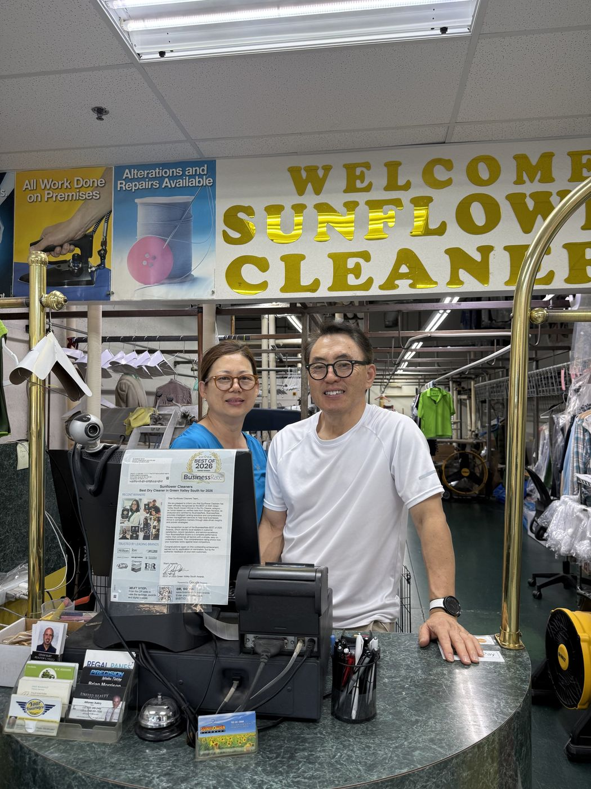

The family
Two people, one shop, twenty years.
The same husband and wife have run Sunflower Cleaners since 2004. He runs the machines. She runs the counter.
Most of our customers are neighbors — Green Valley, Seven Hills, Anthem, Inspirada. Some drive from Summerlin. We’re grateful for every one.
“An eye for detail, good quality, and a fair price for everyday cleaning.”
— what we try to be, every day